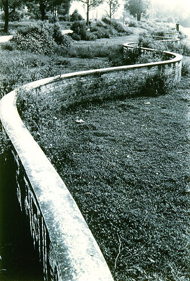

義助慰安婦 —— 李敖百件珍藏義賣藝術品（第57件） 品 名：E7. 蔡永和「曲牆」 預估價：6 萬 成交價：6 萬 說 明： 台灣攝影家老一輩李敖最欣賞柯錫杰先生；年輕一輩就是蔡永和先生，他也是李敖的專屬攝影師。這幅作品是在國外拍攝的，因為是一道彎彎曲曲的牆，所以李敖把它叫做「曲牆」。 
台灣攝影家老一輩李敖最欣賞柯錫杰先生；年輕一輩就是蔡永和先生，他也是李敖的專屬攝影師。這幅作品是在國外拍攝的，因為是一道彎彎曲曲的牆，所以李敖把它叫做「曲牆」。